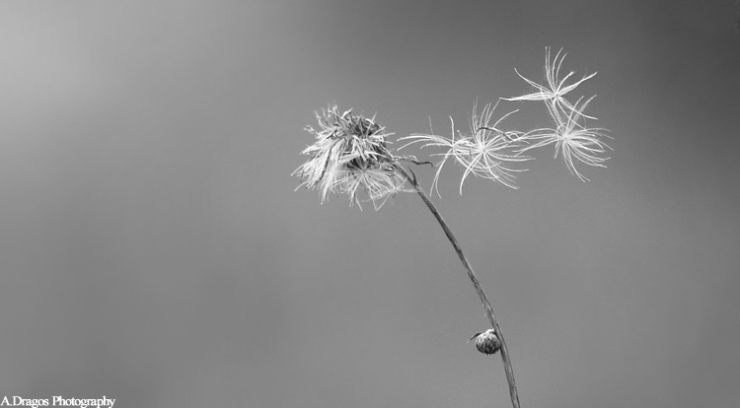

Pulberea vremii în deşert sporeşte
- EGIPT: ?ara unde Soarele e frate cu de?ertul
EGIPT: ?ara unde Soarele e frate cu de?ertul. Luna de miere exoticã la Hurghada. Cei mai mul?i dintre români aleg sã-?i petreacã a?a zisa lunã de miere, care de cele mai multe ori se transfromã într-o sãptãmânã de concediu, cu harta în mânã. - Omul deşert | Viata ca un drog
Soarele şi luna …baladă populară culeasă de Gh. Dem. Teodorescu. Foaie de cicoare, În prunduţ de mare Iată că-mi răsare Puternicul Soare. Dar el nu-mi răsare, Ci va să se-nsoare; Că mi-a tot umblat Lumea-n lung şi-n lat, - Soarele | B.D.C
Soarele-mi vedea Şi îmărmurea, Şi se văieta, Năvodari chema, Năvod aducea Şi-n mare-l băga; Mulţi galbeni că da Să-i scoaţă dalba. Luptă ce-mi lupta În deşert erea, Că ei n-o găsea Şi n-o mai prindea; Făr' de... ce-mi scotea Şi-n năvod trăgea? O mreană de mare Cu solzii de zare. Pe mal d-o scotea, Pe mal d-o zvârlea, - Locul unde Soarele nu creează nicio umbră. Cum este ...
Virusologii au descoperit că razele ultraviolete (UV) pot distruge 90% dintr-o suprafață contaminată cu noul coronavirus, în aproximativ 30 minute, după ce o persoană infectată a strănutat sau a tușit acolo.. Studii separate au concluzionat că soarele poate distruge aproape în totalitate particulele de virus din aer în doar șase minute. - Soarele şi luna - Povesti Nemuritoare
Meditaţii în deşert care te pot bulversa psihic. În jurul meu nu este nici măcar o umbră. Nimic care să schimbe culoarea nisipului fierbinte. Aici, duşman îţi este soarele ce arde cu o intensitate incredibilă. Dușman îți este și vântul singuratic din deşert. El este compozitorul ce născoceşte muzica turbată. - Soarele poate distruge coronavirusul în 30 de minute ...
Oraşul e acum deşert sărăcăcios Iar soarele dispare ros de vină. În dansul şui al torţei dezlânate, Întreg Egiptul se animă în pereţi. Sub mâini de sclavi cad spicele înalte În cântul-rugă îngânat de cântăreţi Şi ziduri grele se despincă-n văl de fum Stânci risipite din nisipuri se adună, Se rânduiesc palate ... - „Soarele” – Tarta apetisantă din brânză de vaci şi ...
Download-uri Poze : om, natură, pădure, siluetă, Munte, deşert, umbră, întuneric, negru, artă, american, fundal, Curcan, hd, cowboy turci 2448x2448,1069612 - Soarele în citate, maxime, aforisme - diane.ro
Soarele şi luna A mai mitică, Ca o floricică, În mijloc şedea, La lucru lucra, Pe toate-ntrecea; Că ea tot ţesea. Ţesea, -nchindisea, Şi ea se numea Ileana Simzeana, Doamna florilor Ş-a garoafelor, Sora Soarelui, Spuma laptelui. Soare răsărea, Şi Soare-mi venea La gură d-argea. Cu dânsa vorbea, Frumos c-o-ntreba, Din gură-i zicea: - Soarele şi luna - versuri Balade Populare | Versuri.ro
Vector imagine de soarele străluceşte peste munte stânci. ... Soare în deşert. Vectorii sponsorizate . Descarcă . Descriere . Vector imagine de soarele străluceşte peste munte stânci. Categorii. Fundaluri. Licență . Politica de confiden?ialitate . Specificații. 0.58 MB. 2018-06-19 . - Reteta Desert cu bostan "Soarele" - Bucataras.RO
3. Se racesc . Intre timp se curata de coarja portocala in forma de spirala cu un cutit ingust si foarte bine ascutit. Coaja taiata de portocala se inroleaza in forma de floare si se prinde cu o scobitoare.

DreamDesigner Servicii IT cu suflet grafica publicitara, design, webdesign, science-fiction, fiction Facebook Twitter Pinterest LinkedIn Show Navigation Hide Navigation Servicii IT Cu suflet The DreamWeaver Păreri astrale Cronicile krakstarilor Gardienii lui Titan Pilula de fictiune În ziua aceea am devenit slayer O plimbare până la capătul grădinii Grafica si webdesign Despre Contact
Pulberea vremii în deşert sporeşte
Luminita Dobrea September 5, 2015 Cugetări , Păreri astrale , The DreamWeaver În aerul străin înecăcios,
Îmi caut calea printre temple în ruină.
Oraşul e acum deşert sărăcăcios
Iar soarele dispare ros de vină.
În dansul şui al torţei dezlânate,
Întreg Egiptul se animă în pereţi.
Sub mâini de sclavi cad spicele înalte
În cântul-rugă îngânat de cântăreţi
Şi ziduri grele se despincă-n văl de fum
Stânci risipite din nisipuri se adună,
Se rânduiesc palate, croiesc drum
În vaietul de sclavi, biciul răsună.
Un tânăr pirpiriu cu ochi adânci, pictaţi,
Înveşmântat în aur şi rubine
Se face auzit între constructorii miraţi,
Mormântu-şi vrea un munte şi mai bine.
Încrâncenat, arată către cer,
Urlă turbat, se zbate-n neputinţă.
Jos, printre oameni, simte că-i stingher,
Să oglindească cerul în deşert nu-i cu putinţă.
Cu-n gest tăios gloata umilă risipeşte,
Spre templu se întreaptă-ndurerat,
Zei împietriţi în goană ocoleşte,
Nu-i pasă că-n ofrande a călcat.
Un zid cedează mâinii sale slabe,
În întuneric se avântă fără spaimă.
Hruba, un labirint pare privirii oarbe,
De nu-i ştii rostul, morţii vei da seamă.
Adânc, în bezna fără de-nceput,
Găseşte pusnicul pierdut în lunga-i viaţă.
Ca preot tânăr pe bătrâni nu i-a crezut,
Trufaş, pe Ra l-a înfruntat pe faţă.
De-atunci îşi duce traiul sub pământ,
Vederea i s-a scurs pe dinăuntru.
Cu zeii cruzi legat în jurământ,
Sorţii parşive-i râde hâtru.
Toiagul adânceşte în nisip fluid,
Hartă stelară îşi aşterne la picioare,
Rânjeşte strâmb la gândul cel perfid
Şi regelui din stele-i pune cingătoare.
„Acolo!” Şoapta se-nfinge-n beznă ca un fulger.
„Acolo nu vor ei, îmi spun că-i sacrilegiu
Se tem că voi seca al cerului sfânt uger”
„Eşti faraon! Îţi pleci urechea la cortegiu?
Te văd umil, supus, cu alte idealuri,
Prea crud să porţi Egipetul pe umeri,
Înveţi în silă inutile ritualuri,
Cu spaimă-n suflet zilele îţi numeri ”
„Acolo ori niciunde!” răsună-n întuneric.
„Fii faraon, copile! Dorinţa ta e lege!
Acum ori niciodată, de vrei să fii puternic
Pe veci, al tău stăpân să fii alege!”
Vântul sălbatic dinspre Nil
Pulberea vremii în deşert sporeşte,
Duşman statornic şi subtil
Sculptate muchii şi statui toceşte.
Te regăsesc în ani matur, înconjurat de oaste.
În trup porţi bătălii adânc săpate,
Alaiuri te urmează în palate vaste,
Poruncile-ţi sunt vorbe măsurate.
Noaptea de peste ani e fum subţire,
Planul măreţ, pe jumătate ridicat.
Pe mulţi îi sperie a lui menire,
La ruga lor rămâi neînduplecat.
În templu zumzăie, în roiuri, trupuri rase
Înveşmântate în in alb ca în lumină.
Căutături ferite, groază, feţe trase
Soborul sfânt invocă zeii în surdină.
Un preot spân aruncă-n şoaptă sumbră
Blestem îngrozitor felinei adorate
Că a-ndrăznit să-ţi calce-n umbră
Şi clipele-ţi sunt astfel numărate.
Îşi face griji că-n grabă te vei stinge
Şi nu vei zămisli alt răsărit,
Al piramidei vârf nu vei atinge
Şi îţi va fi mormântul nesfârşit.
Profetul prea zelos alungi în zări îndepărtate,
Refugi să crezi că zeii pot muri.
Îţi pregăteşti cu grijă rituri complicate
Convins că viaţă veşnică ţi-or dărui.
Nădejdea o-ntăreşti cu scarabei
Sculptaţi în pietre scumpe, delicate.
Tincturi, licori, otrăvuri bei
Crezând că moartea ţintuieşti cât mai departe.
Te legi în pânză strâns ca-n jurământ,
Anubis te-ngrijeşte ca un tată,
Ticseşti cu aur şi averi al tău mormânt,
Iubirea-i în canope ferecată.
Gândeşti nebun să ţii zălog în trup
A vieţii taină, dincolo de moarte.
Capcane crâncene pândesc sigilii ce se rup,
În stânci sapi semne, morţii îi scrii carte.
Sfârşitul te găseşte-n asfinţit,
Iar luna cea bălaie n-are milă,
Îţi luminează fără jenă trupul ciopârţit
Îmbălsămând cu raze carnea cea umilă
În timp ce vântul cel sălbatic dinspre Nil
Pulberea vremii în deşert sporeşte.
Duşman statornic şi subtil
Sculptate muchii şi statui toceşte.
Ca un nebun, cu Sfinxul ai făcut prinsoare
Zicând că timpul învingi fără armă,
Te-ai pus în slujba zeului tău Soare
Iar trupul, prins în pânzele de mort, pare să doarmă.
Nemuritor ajuns hârcă uscată-n zdrenţe
Ce rost să dau acum chipului tău de aur?
La ce ţi-au folosit coşciugele măreţe
Cu trudă cizelate-n mâini de faur?
Acum doar vântul cel sălbatic dinspre Nil
Pulberea vremii în deşert sporeşte.
Doar el, duşmanul tău statornic şi subtil
Sculptate muchii şi statui toceşte.
Fără să-i pese cine eşti şi ai fost
Timpul cel crud nu iartă.
În praf de dinastii păşeşte maiestos
Doar piramidei tale respect poartă.
Luminiţa Dobrea
Distribuie
Facebook Pinterest Twitter LinkedIn WhatsAppLike this:
Like Loading...Related
egipt luminita dobrea păreri astrale poezieDid you like this article? Share it with your friends!
TweetLeave a Reply Cancel reply
Servicii IT Cu suflet The DreamWeaver Păreri astrale Cronicile krakstarilor Gardienii lui Titan Pilula de fictiune În ziua aceea am devenit slayer O plimbare până la capătul grădinii Grafica si webdesign Despre ContactCategorii
Cronicile krakstarilor (15) Cugetări (39) D ale vieţii (1) Fiction (20) Gardienii lui Titan (2) În ziua aceea am devenit slayer (4) La pas, printre stele (5) O plimbare până la capătul grădinii (6) Păreri astrale (42) Parteneri (3) Pilula de fictiune (4) Portofoliu (4) Realizări (34) SciFi (31) Servicii IT (5) The DreamWeaver (83)Postări recente
Ai nevoie de grafician? April 2, 2020 Victorie sălcie January 6, 2020 Pribeag din altă lume December 6, 2019 Atât de fluidă November 6, 2019 Tu, clipă străvezie October 20, 2019Contact
Dobrea Luminiţa I.I.
Piatra Neamţ
CUI 32461681; F27/1217/2013
0721.125.496; 0233.230.956
Urmareste acest blog
© 2020 DreamDesigner - Servicii IT cu suflet
Acest website foloseste cookies si scripturi externe pentru imbunatirea experientei dvs.
My settings Accept %d bloggers like this: Setari de confidentialitate Cookie policySetari de confidentialitate
Acest website foloseste cookies si scripturi externe pentru îmbunatirea experientei dvs. Cookie-urile si scripturile folosite folosite si modul in care afecteaza vizita dvs sunt specificate in partea stanga. Puteti schimba oricand aceste setari. Alegerile dvs pot afecta vizita dvs pe acest website.
NOTE: These settings will only apply to the browser and device you are currently using.
Cookie policy
bla bla 1
Enable Save my settings ✕


Mauris vulputate dolor
Rutrum fermentum nibh in augue praesent urna congue rutrum.
Etiam posuere